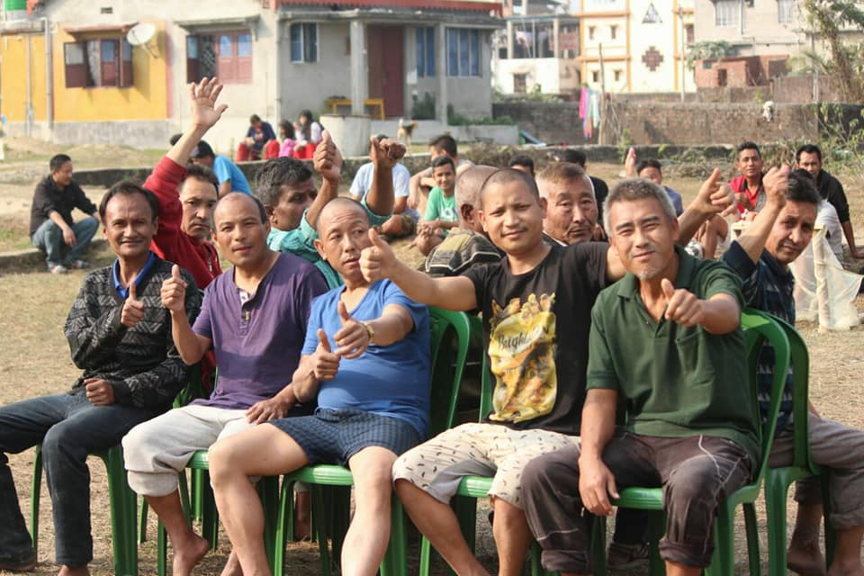
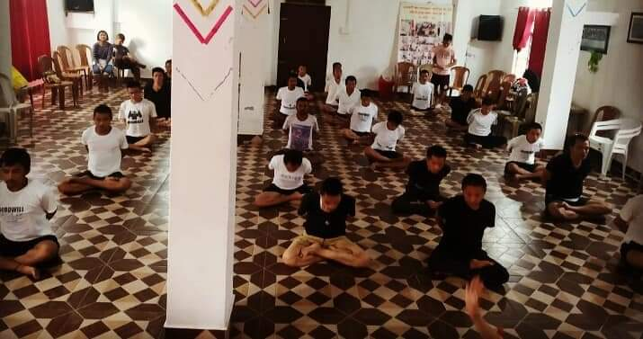
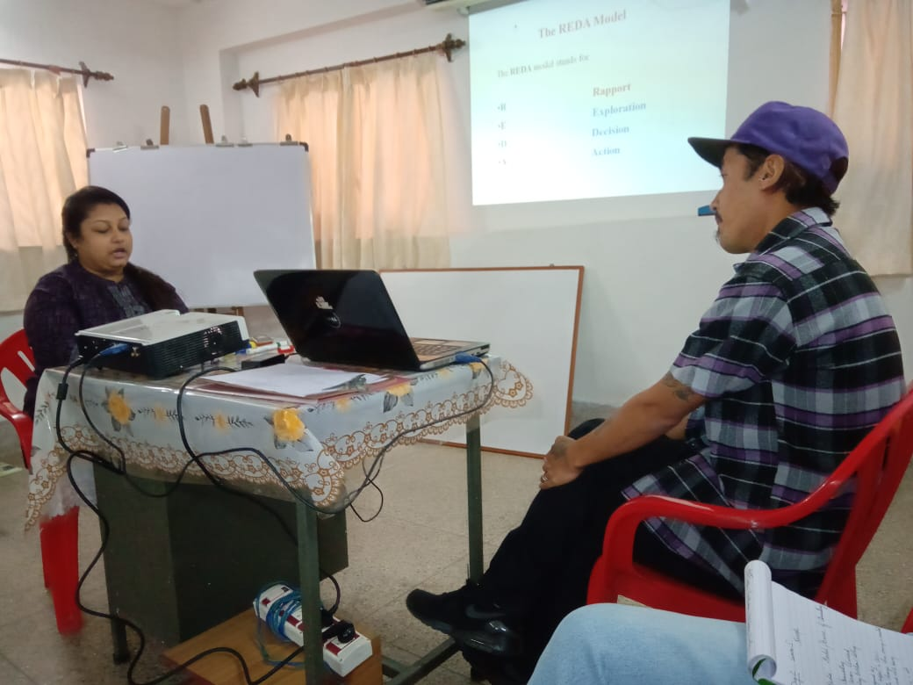
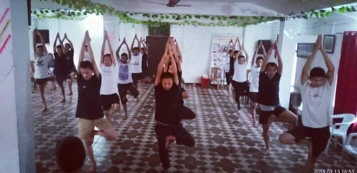
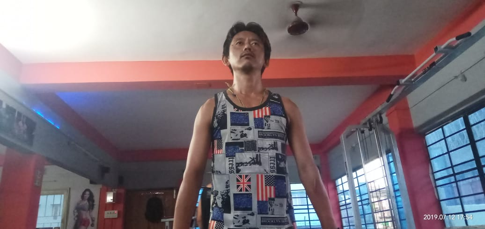
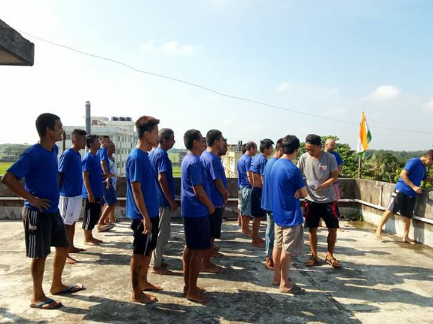
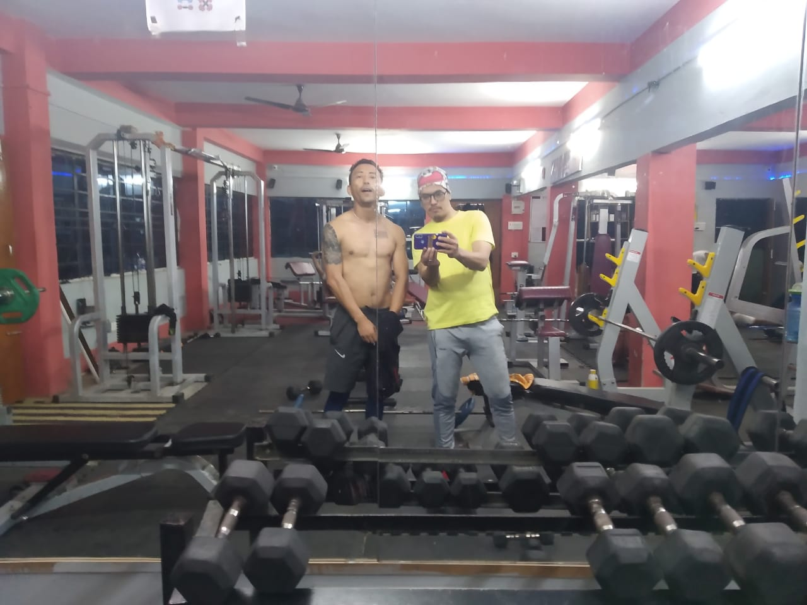
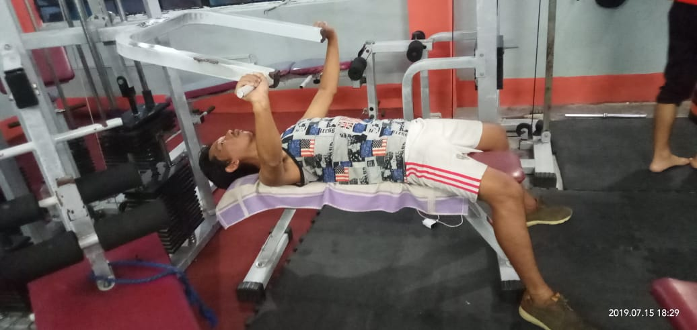

Treatment Structure

Our own experience tells that Drug Addiction and (United Nations ICD F:19 American Medical Association) is a complex issue and affects us in all areas of our lives. It affects the mind, body and the spirit. Therefore, we provide various solutions to address the problem and implement those solutions depending on the individual.
- Withdrawal Management detoxification & general physical wellness is treated by a Visiting Doctor (General Physician)
Welcoming stage: we ensure the patient by now is physically and mentally ready and we call this welcoming stage, as we gently introduce the patient to the next stage of our treatment
- Integration: counseling sessions
- Attending classes (How & Why on addiction alcoholism)
- Writing Assignments (to know oneself better through various ways)
- Self-help group sessions
- Writing daily inventory based on feelings and emotions
- Focus group discussion
- Therapeutic group Involvement (each Individual helping the other person within the group)
- Yoga/sports/Therapeutic walk
- Meditation and prayer
- Aftercare: four weeks of further care or more is encouraged to provide and ensure complete re-integration (can be done from home or from our Centre)






